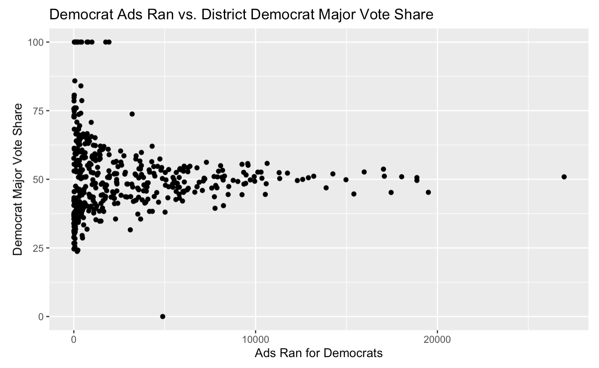
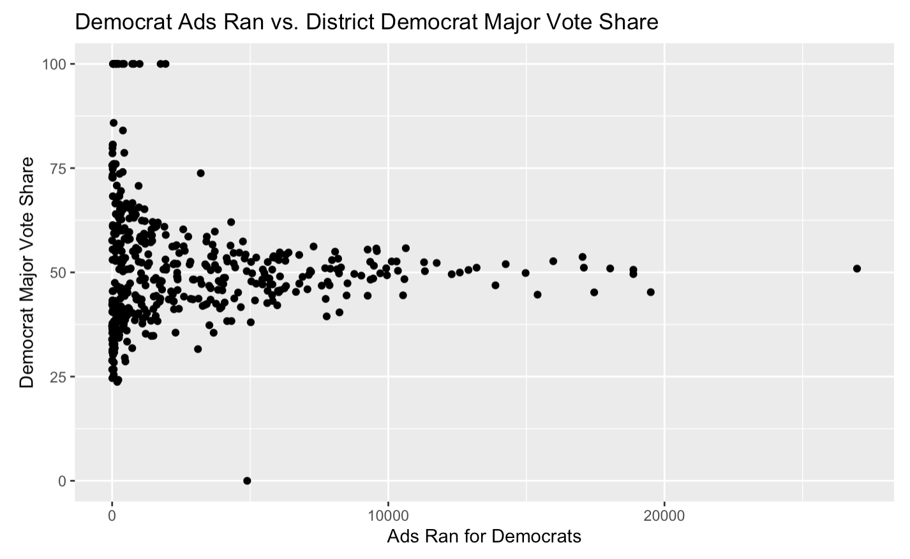

Are Advertisements Impactful?
To explore this week’s central question, I took a look at data from the Wesleyan Media Project about political campaign advertisements for campaigns from 2006 through 2018.
I first wanted to visually inspect the relationship between advertisement volume and party major vote share at the district level for House races, and found unpromising results.
 

As shown in the above 2 plots, there’s no clear correlation between the number of partisan advertisements run and the party’s major vote share in a given district. As the number of advertisements run for each party increases, the party’s major vote share doesn’t increase or decrease.
Though there’s no positive or negative correlation that immediately jumps out from these plots, there are still valuable insights to note. For one, there’s great variability in party vote share when there are a low number of advertisements run in that district - with close to 0 ads run for the Democrat candidate in a district, the candidate can have anywhere from 25% to 100% of the vote share. The same is true for Republican candidates and lack of Republican advertisements. As the numbers of advertisement run increases, towards the magnitudes of 15,000 and beyond, the races become much more competitive, with each party securing about 50% of the major party vote share. This finding is intuitive, in a way, because we could imagine the reason these districts were sites of unprecedented advertisement war was because their races were highly competitive and anticipated.
I was also curious about spending on advertisements versus the promoted candidate’s vote share. Below is the plot of the total estimated cost of advertisements promoting a Democratic candidate against the amount of money spent on their advertising campaign. The same trends from above apply here – at the lower end of advertisement campaign strength and cost, the Democrat major vote share varies widely across different House races. At the higher end of spending, the races remain competitive, with Democrats just edging out their competitors with vote shares hovering slightly above 50%.

To formally check the relationship between advertisement volume and party major vote share in a district, I ran linear regressions across the districts with available data, predicting Democrat major vote share on the ratio of Democrat:Republican advertisements ran in that cycle.
 The results are interesting. The first observation is that the ratio of partisan advertisement volume alone is a poor predictor of Democrat vote share – my model only has an adjusted R-squared of 0.054. Another is that when the ratio of Democrat:Republican advertisements moves from 0 to 1, the Democrat vote share increases by ~6.2 percentage points.
The results are interesting. The first observation is that the ratio of partisan advertisement volume alone is a poor predictor of Democrat vote share – my model only has an adjusted R-squared of 0.054. Another is that when the ratio of Democrat:Republican advertisements moves from 0 to 1, the Democrat vote share increases by ~6.2 percentage points.